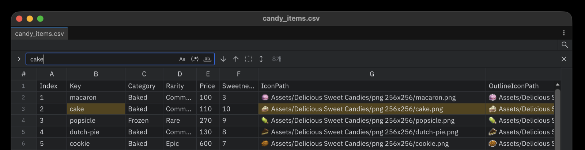
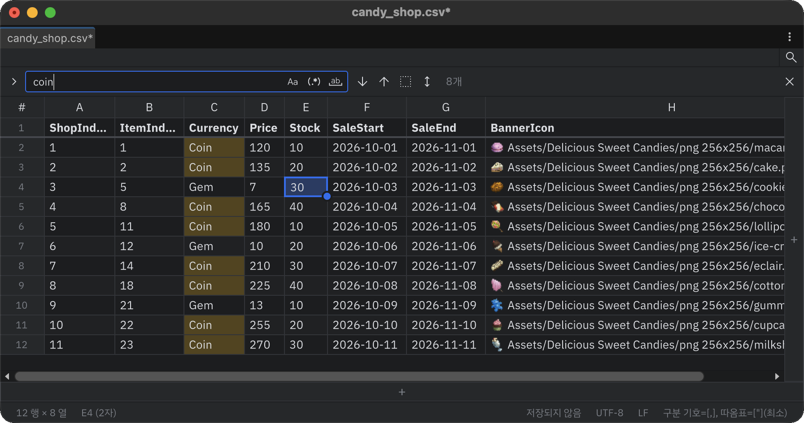

Find and replace
Open the find and replace bar with the toolbar's search icon or Ctrl+F. Matching cells are highlighted in the table.

Find

The toggles on the right side of the input set how to search.
| Toggle | Effect |
|---|---|
| Match case | Distinguishes Cat from cat. |
| Use regular expression | Treats the search text as a regular expression. An invalid pattern shows Invalid regex. |
| Match whole word | Matches whole words only. |
The buttons next to the input:
- Next / Previous match: same as Enter / Shift+Enter or F3 / Shift+F3. The position is shown as
3/12. - Find in selection: searches only the current selection.
- Search vertically: scans column by column, top to bottom. When off, it scans row by row, left to right.
- Close: same as Esc.
Replace
Click the expand button on the left (Toggle replace) to show the replace row.

- Replace (Enter): replaces the selected match and moves to the next one. When no match is selected yet, the first press only moves to the first match.
- Replace all (Ctrl+Enter, Cmd+Enter on macOS): replaces every match at once and shows how many cells changed. One Undo reverts it.
- Preserve case (AB): matches the letter case of the replaced text to the original.
With regular expressions on, the replacement can use group references such as $1.